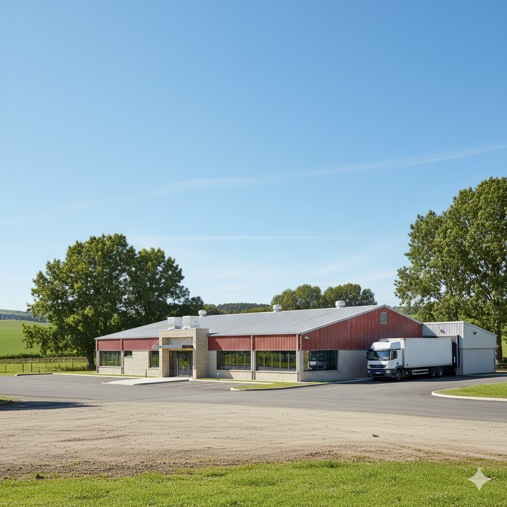
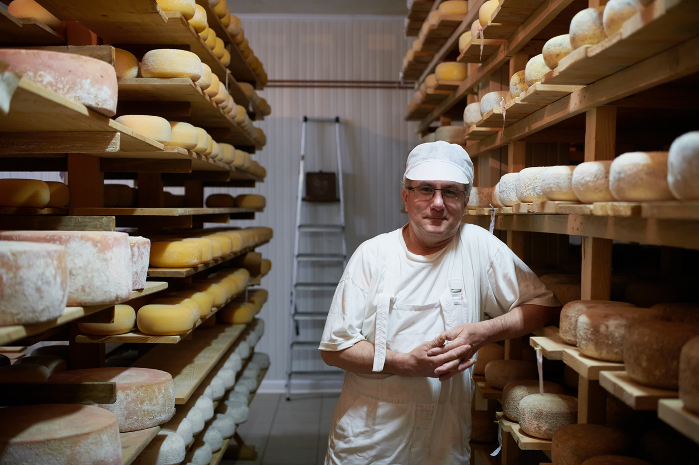
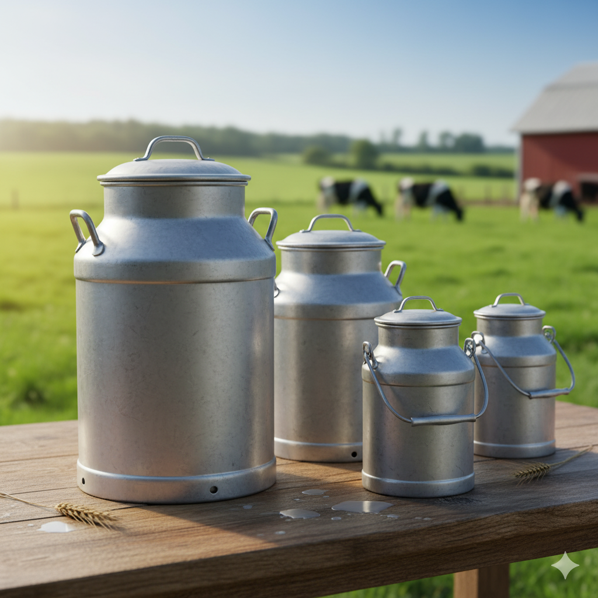
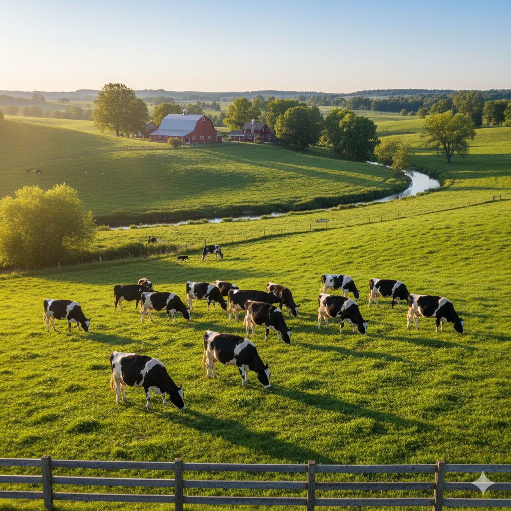

Tradição e qualidade que atravessam gerações.

A história da Santi’Lac nasceu de um sonho simples: transformar o leite fresco da região em
produtos
artesanais que resgatassem o verdadeiro sabor do campo. Tudo começou com uma pequena produção familiar, em que
o cuidado com cada detalhe era mais importante do que a quantidade.
Com o tempo, a qualidade e o sabor autêntico dos nossos queijos conquistaram clientes e abriram portas para
novos horizontes. O que antes era apenas uma paixão da família tornou-se uma marca reconhecida, que mantém
viva a tradição dos laticínios artesanais e valoriza a parceria com produtores locais.
Cada etapa da nossa trajetória foi marcada por dedicação, respeito às raízes e compromisso com a excelência.
Hoje, a Santi’Lac une tradição e inovação, preservando receitas que atravessaram gerações, ao mesmo tempo em
que investe em técnicas modernas para garantir produtos de alta qualidade e sabor inconfundível.
Nossa história continua sendo escrita todos os dias, ao lado das famílias que confiam em nós e compartilham
momentos especiais ao redor da mesa.

Na Santi’Lac, nossa missão é levar à mesa das famílias o sabor autêntico e artesanal dos
queijos de qualidade
superior, produzidos a partir do leite fresco da região. Trabalhamos lado a lado com pequenos produtores,
valorizando a agricultura familiar e preservando tradições que atravessam gerações.
Mais do que fabricar laticínios, buscamos conectar pessoas às suas origens, oferecendo produtos que unem
sabor, cuidado e confiança, sempre com respeito ao campo e compromisso com a excelência.
Qualidade Artesanal – Cada produto é feito com dedicação e cuidado, preservando o sabor autêntico dos queijos
artesanais.
Tradição e Cultura – Mantemos vivas as receitas que atravessam gerações, respeitando as raízes do campo.
Valorização do Produtor Local – Trabalhamos em parceria com pequenos produtores, fortalecendo a agricultura
familiar.
Respeito à Natureza – Priorizamos práticas sustentáveis que cuidam do meio ambiente e garantem frescor ao
consumidor.
Confiança e Transparência – Atuamos com honestidade em todas as etapas, da produção à entrega.
Inovação com Responsabilidade – Buscamos evoluir, sem abrir mão da essência artesanal que nos define.

Selecionado de rebanhos locais e sempre saudável.
Tradição passada de geração em geração.

Sem pressa, com dedicação e cuidado.
Respeito à natureza e responsabilidade ambiental.